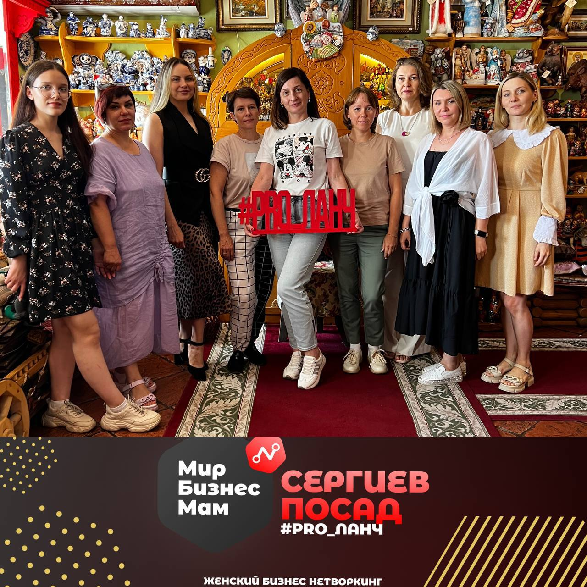
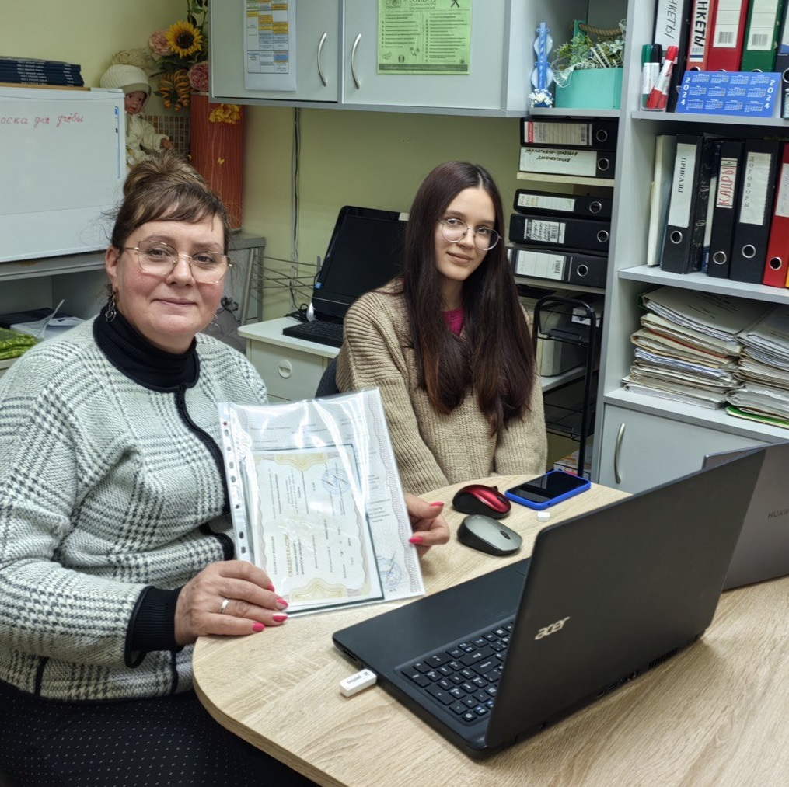
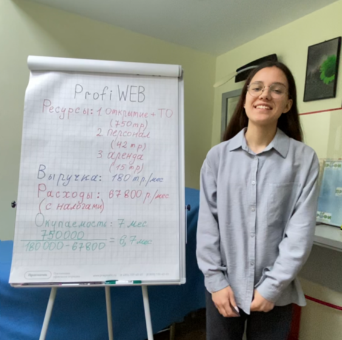

Бизнес нетворкинг "Pro Ланч"
Я приняла участие в Женском бизнес нетворкинге "Pro Ланч". Данное мероприятие проходило в Сергиев Посаде 18 июля 2024 года. Я представляла УЦ "Профи" как преподаватель курса "Основы компьютерной грамотности". Я упомянула особую важность освоения компьютерной грамотности в наше время.

Вручение свидетельства выпускнику
Выпуск моей первой ученицы Марины и вручение ей документа государственного образца. Марина хотела улучшить свои навыки работы с компьютером в связи со сменой работы. В итоге она не только стала успешнее на работе, но и помогает своим коллегам.

Участие в конкурсе
Также я принимала участие в конкурсе бизнес-проектов. Я презентовала свои идею открыть в Дубне (МО) студию для видеосъемки и проведения вебинаров. Были указаны цель, задачи, сроки проекта,а также его риски.